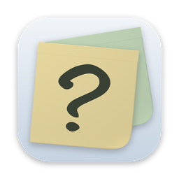
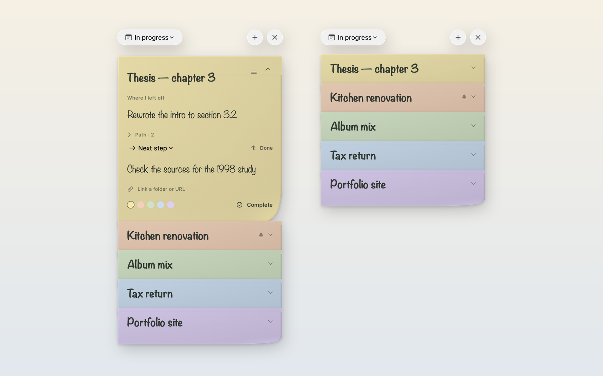
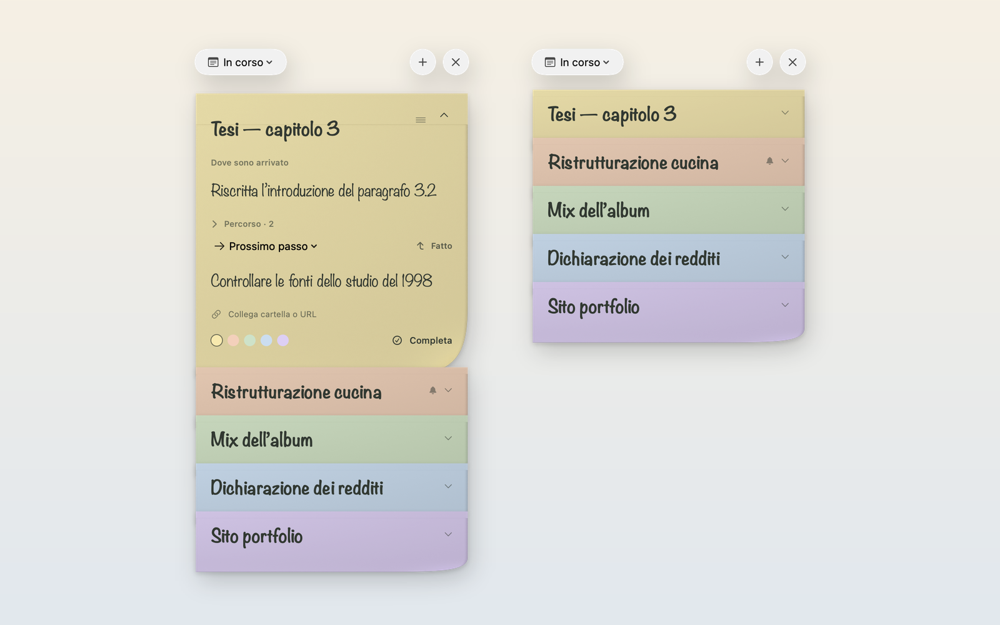

Thesis — chapter 3Tesi — capitolo 3
Where I left offDove sono arrivato
→ Next stepProssimo passo

What’s Next?One paper note per project, in your Mac’s menu bar. It remembers the point you stopped at and the step that comes next, so getting back to work takes a glance. Un foglio di carta per ogni lavoro, nella barra dei menu del Mac. Ricorda il punto in cui ti sei fermato e il passo successivo, così per ripartire basta uno sguardo.
Free and open source · macOS 14 or later · Apple silicon and Intel Gratis e open source · macOS 14 o successivo · Apple silicon e Intel
Where I left offDove sono arrivato
Try it: press Done ↑Prova: premi Fatto ↑
The panelIl pannello
Press ⌃⌥Space from any app. Every project shows just its title strip; click one to open it, drag it to reorder. The panel never takes focus away from the app you were in. Premi ⌃⌥Spazio da qualsiasi app. Di ogni lavoro vedi solo la fascia del titolo: un clic lo apre, trascinandolo cambi l’ordine. Il pannello non toglie mai il focus all’app che stavi usando.


What it doesCosa fa
Just like in the app: each sheet shows its title, click to read the rest.Proprio come nell’app: ogni foglio mostra il titolo, clicca per leggere il resto.
Press Done or ⌘↩: the next step becomes “Where I left off” and the line is free for the next one. Nothing is lost — earlier points stay in the note’s Path, with their dates. Premi Fatto o ⌘↩: il prossimo passo diventa “Dove sono arrivato” e la riga è libera per quello dopo. Non si perde niente: i punti precedenti restano nel Percorso del foglio, con la data.
Switch a note to “Waiting for”, write what you’re waiting on and pick when to check again: in an hour, tomorrow at 9, Monday. The notification opens that very note. Passa un foglio su “In attesa”, scrivi cosa aspetti e scegli quando ricontrollare: tra un’ora, domani alle 9, lunedì. La notifica apre proprio quel foglio.
Notes untouched for a week show how many days they’ve been sitting. Choose 3, 7, 14 or 30 days — or never. Notes you’re deliberately waiting on are left alone. I fogli non toccati da una settimana mostrano da quanti giorni sono fermi. Scegli 3, 7, 14 o 30 giorni, oppure mai. I lavori che stai aspettando apposta non vengono segnalati.
Small, medium and large widgets show your stack in the same order as the app. Tap ↰ on a note to mark its step done without opening anything; tap the paper to start writing. Notes with a red priority sticker stand out at a glance. Widget piccolo, medio e grande con la pila nello stesso ordine dell’app. Tocca ↰ su un foglio per segnare fatto il passo senza aprire nulla; tocca la carta per scrivere. I fogli con l’adesivo rosso di priorità si notano al primo sguardo.
Attach a project folder or URL to each note and open it in one click. ⌘Z undoes typing and every action — Done, color, reminders, complete. English and Italian, switchable live. Collega a ogni foglio una cartella o un URL e aprilo con un clic. ⌘Z annulla la scrittura e ogni azione: Fatto, colore, promemoria, completa. Italiano e inglese, da cambiare al volo.
KeyboardTastiera
Show or hide the panel, from any appMostra o nasconde il pannello, da qualsiasi app
Done: move the next step upFatto: porta su il prossimo passo
New noteNuovo post-it
Undo anything on the open noteAnnulla qualsiasi cosa sul foglio aperto
Hide, and return to your appNascondi e torna alla tua app
No account. No network. No analytics. Just a file on your Mac. Nessun account. Nessuna rete. Nessuna statistica. Solo un file sul tuo Mac.
Your notes are a plain JSON file atLe note sono un semplice file JSON in ~/Library/Application Support/DoveSonoArrivato/notes.json, saved atomically a moment after you stop typing. If it can’t be read, the app keeps the original and refuses to overwrite it. salvato in modo atomico appena smetti di scrivere. Se non fosse leggibile, l’app conserva l’originale e non lo sovrascrive.
Open source · MITOpen source · MIT
SwiftUI inside an AppKit panel, native text editors, a WidgetKit extension and paper textures rendered in Blender. Read it, fork it, send a pull request. SwiftUI dentro un pannello AppKit, editor di testo nativi, un’estensione WidgetKit e carta renderizzata in Blender. Leggilo, fanne un fork, proponi modifiche.
git clone https://github.com/massimopozzi1989-gif/Whats-Next.git
cd Whats-Next
swift test # tests
zsh scripts/build-app.sh # app + widget (needs Xcode and XcodeGen)